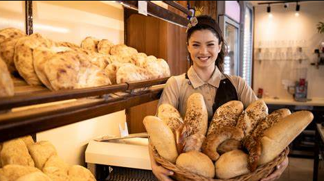
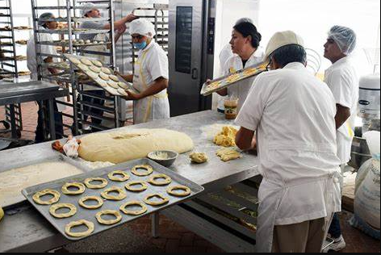
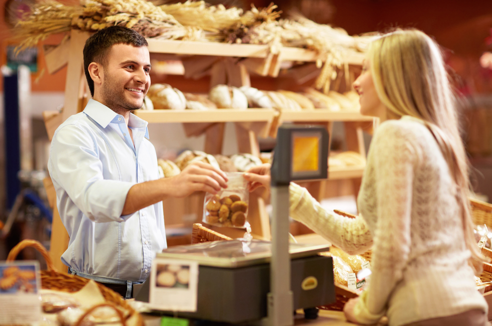
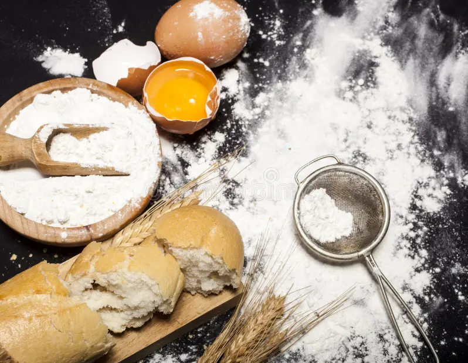
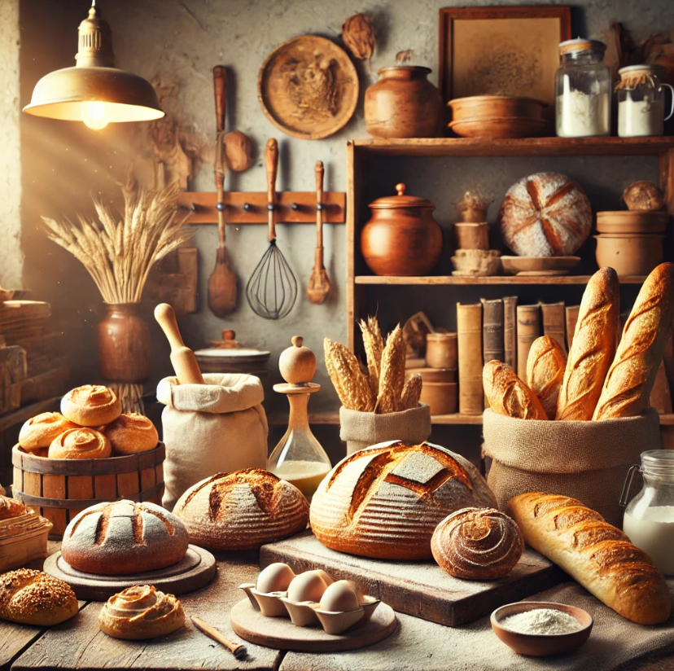
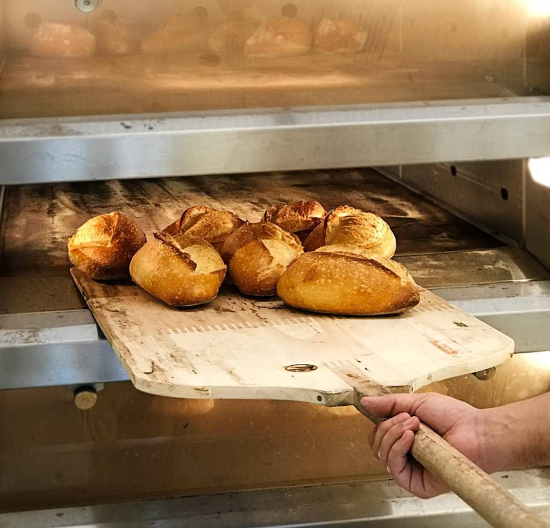
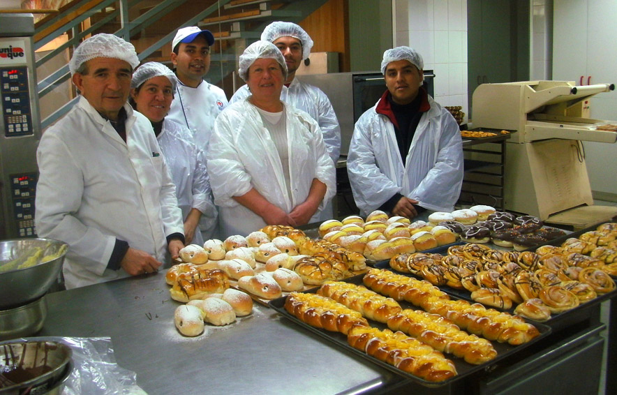

Visión
Ser la panadería favorita de nuestra comunidad, reconocida por la calidad artesanal y nuestro compromiso con la sostenibilidad.
En Paneros, valoramos la tradición y la calidad en cada uno de nuestros productos. Desde 2005, nuestra panadería ha sido un referente en la elaboración de panes y pasteles artesanales, destacándose por el uso de ingredientes frescos y técnicas tradicionales que evocan el sabor de lo auténtico. Gracias a la preferencia y confianza de nuestros clientes, hemos crecido hasta convertirnos en una de las panaderías más queridas y reconocidas en Chiclayo.
Nuestro compromiso va más allá de la panadería: buscamos fortalecer los lazos con nuestra comunidad a través de la innovación, el respeto y un servicio excepcional. Nos esforzamos por crear un espacio donde la tradición se une con la modernidad, ofreciendo no solo productos deliciosos, sino también una experiencia única que enriquece cada visita.
En Paneros, creemos en la importancia de la sostenibilidad y en apoyar a los pequeños productores locales. Por ello, trabajamos bajo prácticas responsables que aseguran la frescura y calidad de cada pieza de pan, mientras contribuimos al cuidado del medio ambiente y al desarrollo de nuestra región.
Nuestro objetivo es ser un lugar donde cada cliente se sienta como en casa, disfrutando de productos que transmiten calidez, alegría y la esencia de nuestra pasión por la panadería.

Ser la panadería favorita de nuestra comunidad, reconocida por la calidad artesanal y nuestro compromiso con la sostenibilidad.

Crear panes y pasteles que combinan tradición e innovación, ofreciendo productos frescos y un servicio excepcional.

En la Panadería Paneros, nos regimos por los principios que rigen nuestra identidad: compromiso, innovación, tradición y calidad.

Utilizamos solo los ingredientes más frescos y de la mejor calidad.

Nuestras recetas han sido transmitidas por generaciones.

Todos nuestros productos son horneados frescos cada día.
